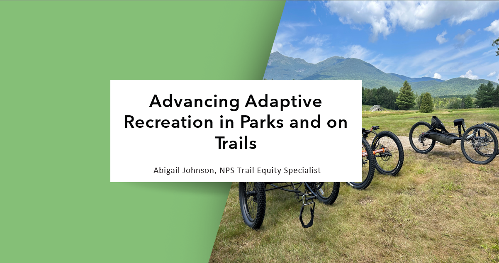

My Role
I was the primary researcher and designer on this project. I worked with the other members of the NPS Office of Outdoor Recreation and members of the NPS Park Accessibility for Visitors and Employees (PAVE) Program to brainstorm, discuss project direction, and get feedback.
The Result: Foundational Resources on Adaptive Recreation for the NPS
- A set of five case studies on the internal NPS SharePoint, each on a different adaptive recreation device loan program. Each case study provides a program overview, a main lesson/takeaway, and an overview of the program's logistics. The SharePoint also includes pages on case study methodology and next steps for parks who want to start their own program.
- A map of known mobility device loan programs on the NPS.gov accessibility page. The map links directly to the accessibility page for each park's program. The type of device is listed for each program so visitors can quickly see what is available.
- A webinar on adaptive recreation loan programs in the NPS, held in October 2024. The presenters in this webinar were staff from Great Smoky Mountains National Park, Knox County, Tennessee, and Catalyst Sports. The presentation was a deep dive into the inclusive hikes, bike rides, and camping trips that Great Smokies has held in collaboration with Knox County and Catalyst Sports. The webinar had 50+ participants and generated significant interest both among staff who are currently working to establish programs and staff who want to get their leadership on board with starting a program.
Design Process: Empathize, Define, Ideate, Prototype, Test
Initial Interviews
I started this project as I was also starting my time with the National Park Service. To gain a broad understanding of how mobility devices show up in the agency, I created a stakeholder map with the main categories of managers, users, non-profit advocates, designers/engineers, and trainers. I then conducted five interviews with members of this map to understand how NPS staff learn and interact with adaptive recreation generally, as well as scoping calls with three parks who have established adaptive recreation device loan programs to learn more.

Stakeholder map with “Mobility Devices" at the center and the main categories of managers, users, non-profit advocates, designers/engineers, and trainers (map is intentionally blurred to preserve anonymity of names)
Research on Existing Programs
In order to determine which loan programs to write case studies on, I needed a list of existing programs! I conducted background research through focused Google searches and by reviewing the websites of parks who had previously engaged with accessibility work to compile an initial list of 26 parks that had some sort of loan program for an adaptive device for recreation.
Asking the Right Questions (and the Right Parks)
After conducting initial research, I was ready to create my interview guide for case studies on adaptive recreation devices. For this task, I jumped to the “Define" stage of the process and created a journey map for parks establishing loan programs. From this timeline, I was able to define what questions I needed to ask parks to better understand their programs as well as distill what questions parks would ask when they were thinking about starting a program.

A journey map for the steps in creating an adaptive recreation device loan program (“The Process”), which was used to create “Questions for Parks with Current Programs” and “Questions for Parks Starting a Program.”
I brainstormed with my colleagues to build off these questions, then selected the questions that were most essential to understanding the loan programs I would interview.
I also used the journey map and associated questions to define nine key “pivot points” for parks with existing programs. These included:
- Program age
- Current program size
- Park region
- Device location in park
- Chair type
- Local adaptive sports programs
- Other local support
- Park visitation
- Staff time for accessibility
I selected six parks that varied across these pivot points and conducted six hour-long interviews.
Interview Analysis
My interviews left me with an enormous amount of relevant information, but no structure for how to share it. To process my interviews, I collected “aha moments” and conducted detailed analysis. I filled out a debrief document after each interview, where I quickly wrote down quotes and ideas that stuck out to me as distinctive, new, or that deviated from my current understanding of loan programs. After I had conducted all of the interviews, I rewatched each one to fill out my notes and pull out the main ideas and takeaways.

Overall takeaways distilled from case study interviews
Shaping Content Into Case Studies
From my journey map for creating a loan program, I knew what questions parks were asking about the process. However, I did not know which format would work best to convey the information. I came up with two possible formats: a Q&A format, which would read almost like the interview itself and address each central question one by one, or a Lessons and Takeaways format, which would give an overview of a loan program and then describe key lessons and takeaways. I knew I would create the case studies on the internal NPS SharePoint website, where they could be easily updated, shared, and accessed by viewers with disabilities.
A Tale of Two Case Studies
I created two prototype case studies, one in the Q&A format and one in the Lessons and Takeaways format. I conducted research on what typical case studies look like and made sure to include all relevant information in both prototypes.
Keeping it Brief and Telling a Story
I conducted A/B testing with staff from two parks considering loan programs.

Feedback on the Q&A and Lessons and Takeaways case study prototypes from staff members at two parks who were considering starting their own loan programs.
Both prototypes got positive feedback. NPS staff liked the conversational feel of the Q&A format and appreciated the concision of the Lessons and Takeaways format. Together with my colleagues, we decided to continue with the Lessons and Takeaways format, but incorporate a storytelling feel and create a new page to guide staff through initial steps.
Going Beyond Case Studies
From my initial interviews, research, and prototyping, it became clear that parks had many questions about loan programs, and writing case studies would only be a start. Some questions were too broad to be answered by a set of case studies, like “How many other national parks have a similar program?" Others were so detailed that they would be best answered through an actual conversation. And in some of my interviews, staff members with established programs were directly asking for further support.
I took these ideas back to the Office of Outdoor Recreation and PAVE Program. Together, we brainstormed ways to share what we had learned beyond the case studies.

Brainstormed ideas for sharing beyond the case studies
We narrowed to two deliverables: a webinar with a case study park and a public map on NPS.gov. I also presented at the National Outdoor Recreation Conference, NRPA Conference, NPS Youth Programs community, and Transportation Research Board AEP20 committee.
Conclusion: Creating Products that Address Needs
Many jobs do not have “design” in the title, yet applying design thinking can make the difference between a good and a great product. This project tested my ability to integrate the tools and processes of design in the scope of an existing project work plan. When I approached the project as a design project, I was able to look beyond my original task of writing case studies and understand why those case studies were important, how they fit into a large web of people and resources, and where they were not sufficient support for parks and their visitors engaging in adaptive recreation. The case study documents I created laid the foundation for how the national office of the NPS approaches support for adaptive recreation device loan programs. The loan program map, webinar, and additional presentations we gave have all started to build on that foundation, and future resources created after my fellowship position ends will continue to build robust support for visitors of all abilities to fully experience national parks.
Gallery
